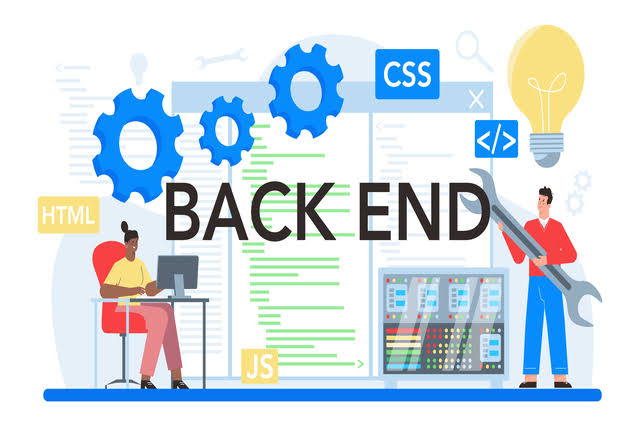

Back-end es la parte de un sitio web o una aplicación que funciona detrás de lo que el usuario ve y se encarga de procesar la información, realizar operaciones y administrar los datos. Su función principal es hacer que una página web funcione correctamente, permitiendo realizar tareas como registrar usuarios, iniciar sesión, guardar información, procesar pagos y consultar datos almacenados. El back-end trabaja junto con el front-end, ya que recibe las solicitudes que realizan los usuarios desde la página web, las procesa y envía una respuesta. Para desarrollarlo, se utilizan diferentes lenguajes y tecnologías, como Python, Java, PHP, JavaScript con Node.js y Ruby. También utiliza bases de datos, como MySQL y PostgreSQL, para almacenar, organizar y consultar información. Además, el back-end se encarga de aspectos importantes como la seguridad, la autenticación de usuarios y el control del acceso a los datos. En conclusión, el back-end es una parte fundamental del desarrollo web porque permite que los sitios y las aplicaciones funcionen correctamente, procesen información y realicen tareas que no se pueden llevar a cabo únicamente con los elementos visuales del front-end.
